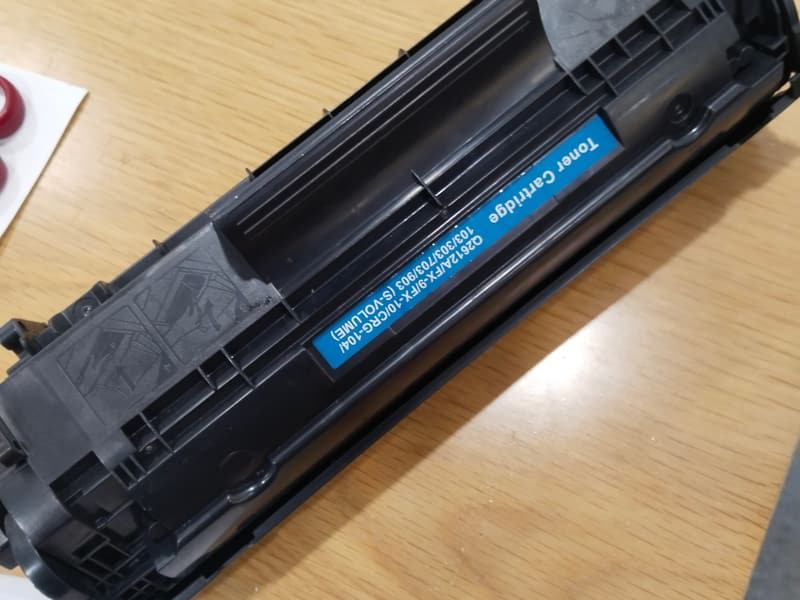
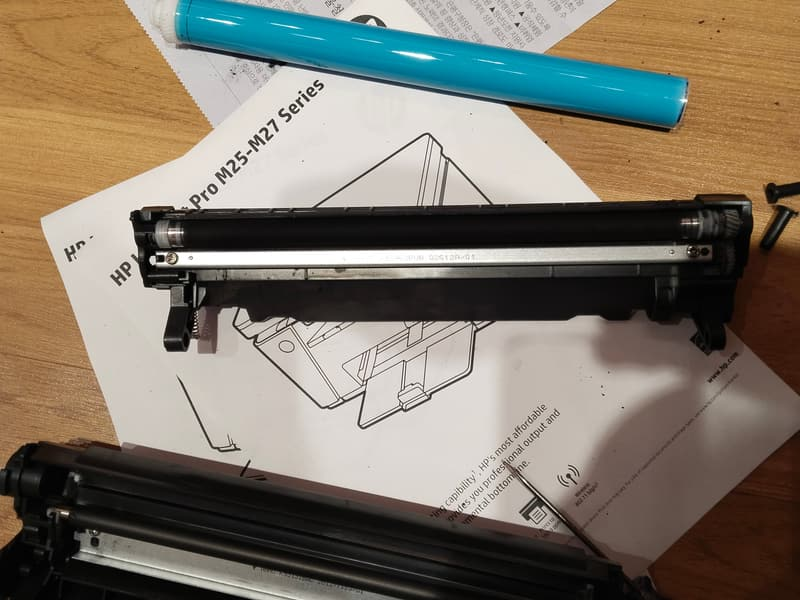

Máy in bị mờ: nhìn bản in để biết do mực hay do linh kiện
Cùng là in mờ nhưng mỗi kiểu mờ có một nguyên nhân khác nhau. Xem bản in của anh/chị khớp dòng nào bên dưới, nhiều trường hợp xử lý xong trong vài phút mà không tốn đồng nào.
Bản in của anh/chị giống kiểu nào?
Hệ thống 9 địa chỉ: Quận 8, Quận 10, Quận 11, Phú Nhuận, Bình Thạnh, Bình Chánh, Thủ Đức, Bình Dương.
Tìm hình giống tờ giấy của anh/chị, mũi tên đỏ chỉ đúng chỗ lỗi. Hình là minh hoạ, bấm vào hình để xem nguyên nhân.
- Nhạt đều cả trang, nhạt dần qua nhiều ngày. Nguyên nhân: Hộp mực sắp hết. Nên làm: Lắc hộp để in tạm, sau đó cần nạp.
- Nhạt đều ngay từ trang đầu, mực vẫn còn. Nguyên nhân: Đang bật chế độ tiết kiệm mực. Nên làm: Tự tắt được trong cài đặt in.
- Mờ một bên trang, bên kia vẫn đậm. Nguyên nhân: Mực dồn lệch trong hộp, hoặc trục từ đã mòn. Nên làm: Lắc hộp trước, không hết thì thay trục từ.
- Mờ kèm nền xám, chữ có viền bẩn. Nguyên nhân: Trống đã mòn. Nên làm: Cần thay trống.
- Vừa nạp mực xong mà vẫn mờ. Nguyên nhân: Mực chưa xuống đều, hoặc nạp sai loại mực. Nên làm: In thử 10 trang, còn mờ thì báo lại nơi nạp.
Làm theo thứ tự này, mất khoảng 5 phút
- In một trang từ file khác. Nếu trang đó đậm bình thường thì lỗi nằm ở file, không phải ở máy.
- Tắt chế độ tiết kiệm mực: vào lệnh in, mở Properties (hoặc Preferences), bỏ chọn Toner Save hoặc EconoMode, kéo độ đậm (Density) về mức giữa.
- Tắt máy, lấy hộp mực ra, cầm hai đầu và lắc ngang nhẹ 5 đến 6 lần rồi lắp lại. Để hộp tránh nắng và đừng chạm tay vào trục bên trong.
- Đổi vài tờ giấy khô, mới. Giấy ẩm làm mực bám kém, nhìn rất giống máy hết mực.
- In lại trang thử và so với bản cũ.
Đọc kết quả sau khi thử
- Đậm trở lại nhưng vài chục trang sau lại mờ: gần như chắc là hết mực. Lắc hộp chỉ giúp in thêm được ít trang, nên chuẩn bị nạp để không dừng giữa lúc đang cần in.
- Không đậm lên dù hộp còn mực: mực không xuống được trang giấy, thường do trục từ hoặc trống đã mòn. Cứ nạp thêm mực ở trường hợp này sẽ tốn tiền mà bản in vẫn mờ.
- Mờ một bên không đổi: nhiều khả năng do trục từ. Đổi hộp mực khác để thử là cách kiểm tra nhanh nhất nếu văn phòng có sẵn hộp dự phòng.


Thử rồi vẫn chưa được?
Gọi hoặc gửi ảnh bản in qua Zalo, cửa hàng sẽ nói anh/chị biết nên làm gì tiếp theo và báo giá trước. Văn phòng, cửa hàng ở nội thành TP.HCM có nhiều máy thì nhắn danh sách dòng máy để cửa hàng sắp xếp một lượt. Có xuất hoá đơn VAT, bảo hành tính theo số trang in.
Gọi 0986 704 260 Gửi ảnh qua Zalo
Giá tham khảo
| Hạng mục | Giá |
|---|---|
| HP — 12A, 35A, 85A, 49A, 05A, 80A | 80.000 – 100.000đ |
| Canon — EP-26, 303, 325, 326, 329, 051 | 80.000 – 100.000đ |
| Brother — TN-1000, 2130, 2260, 2365, 2385 | 120.000đ |
| Trục từ | 120.000 – 180.000đ |
| Trống (drum) máy in A4 | 180.000 – 280.000đ |
Giá chốt sau khi xem máy, anh/chị đồng ý thì mới làm.
Hệ thống 9 địa chỉ, chọn nơi gần anh/chị
- Quận 8 5/19 Phạm Hùng, Bình Hưng
- Quận 10 77 Cửu Long, Hòa Hưng
- Quận 10 79 Bắc Hải
- Quận 11 64 Bình Thới
- Phú Nhuận 240 Nguyễn Trọng Tuyển
- Bình Thạnh 1/2/26 Võ Oanh
- Bình Chánh 203 Thế Lữ, Tân Nhựt
- Thủ Đức 75 đường số 4, KDC Tam Bình
- Bình Dương 3 Lái Thiêu 1
Gọi hoặc nhắn Zalo 0986 704 260 cho mọi địa chỉ. Bấm vào địa chỉ để mở chỉ đường.
Câu hỏi thường gặp
Máy in phun bị mờ thì sao?
Máy phun bị mờ thường do mực trong bình đã thấp hoặc đầu phun bị nghẹt, khác với máy laser. Kiểm tra mức mực trong bình trước, rồi chạy Head Cleaning trong phần cài đặt máy in. Chạy 1 đến 2 lần mà chưa cải thiện thì nên dừng, vì chạy nhiều lần rất tốn mực.
Nạp mực bao nhiêu lần thì nên thay hộp mới?
Khi vỏ hộp đã nạp quá 4 đến 5 lần, các chi tiết bên trong thường đã mòn, nên tính tới hộp mới nguyên bộ thay vì nạp tiếp.